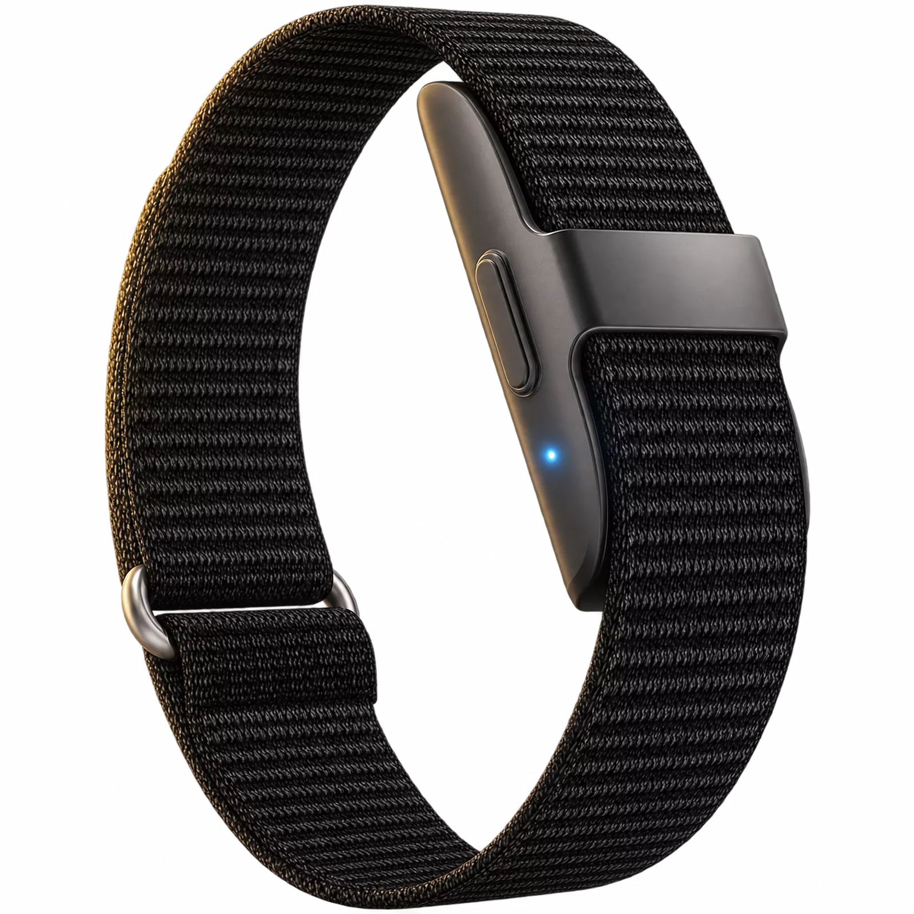
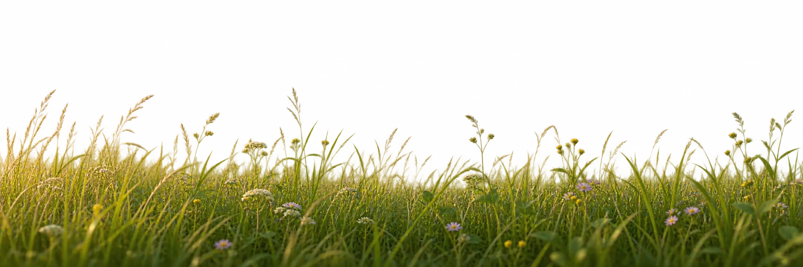
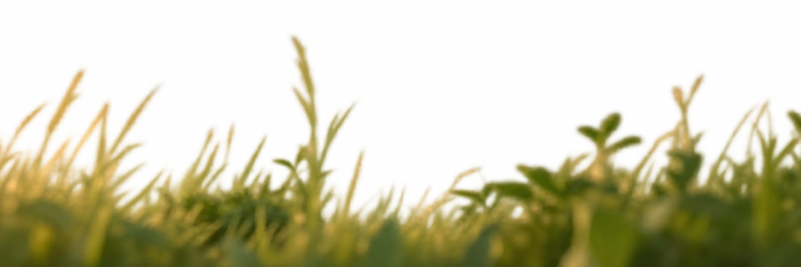
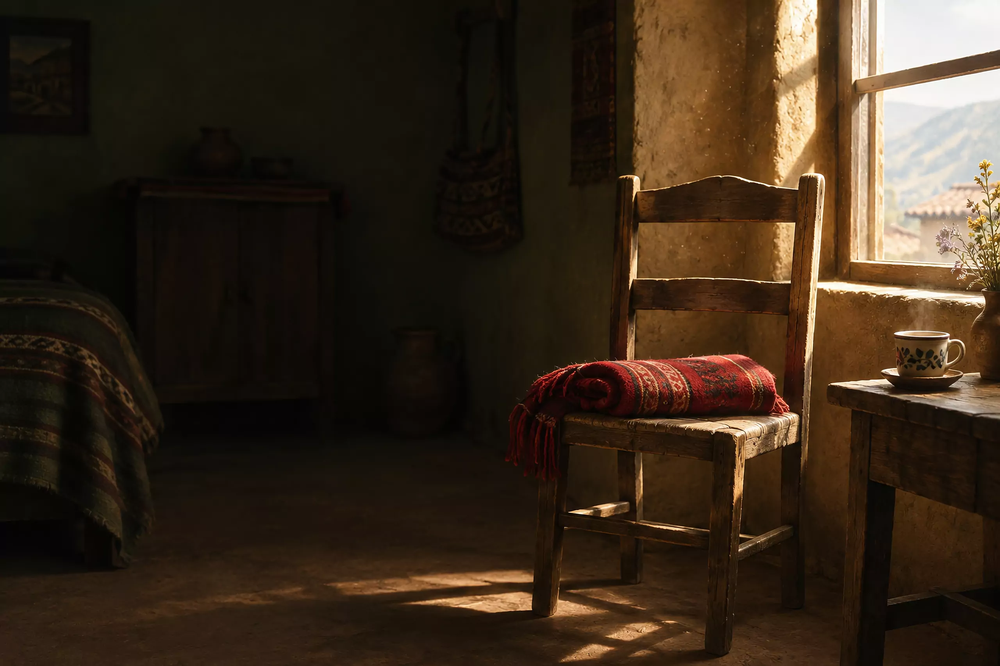
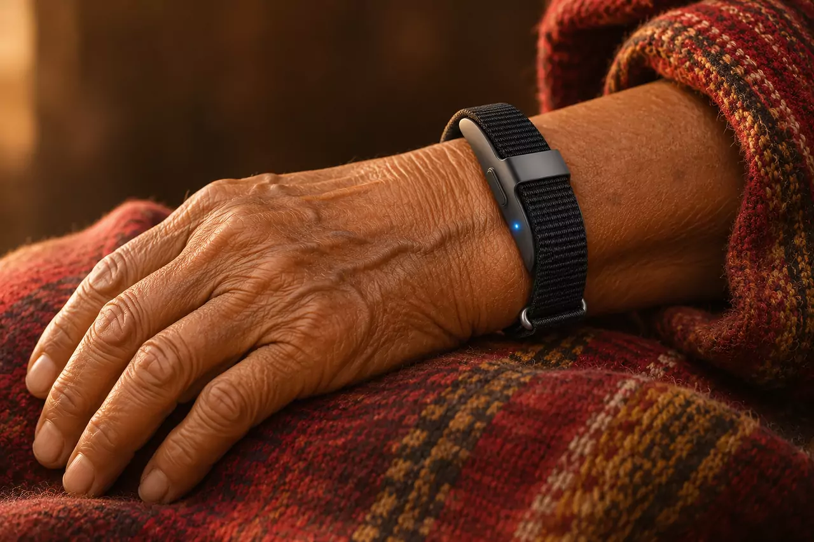
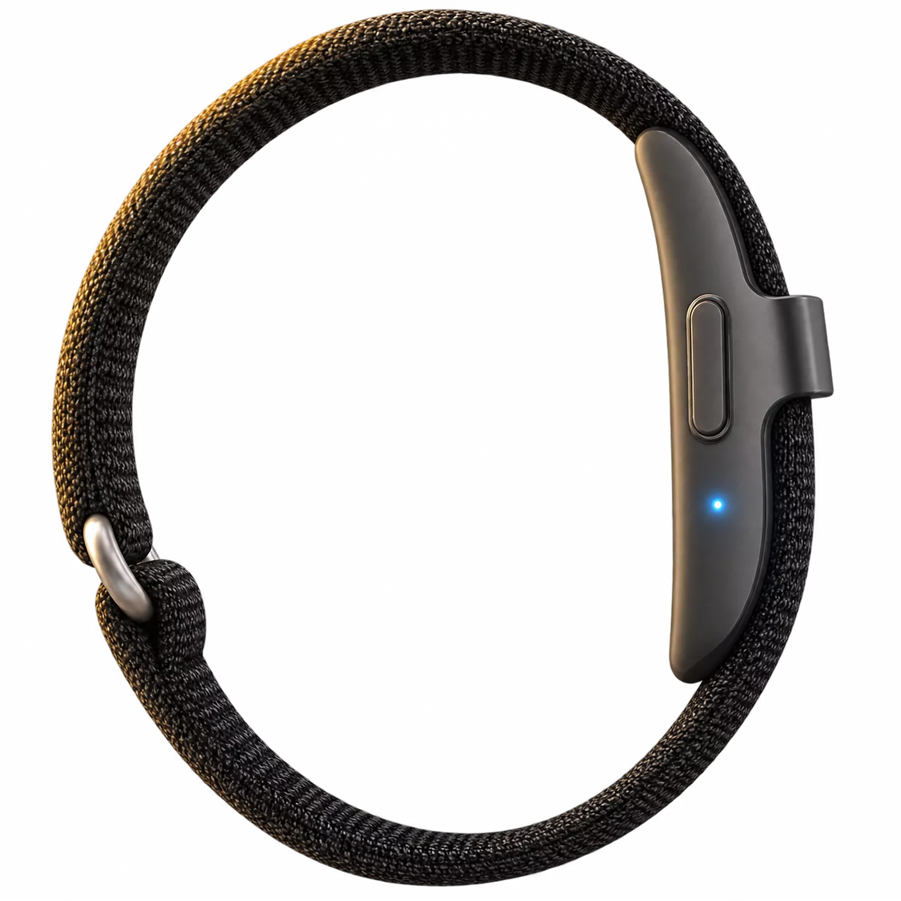

Una pulsera que te cuida



- Vigila tu pulso y tu oxígeno
- Te pregunta antes de avisar
- Correa tejida y ajustable
AllinBand es el concepto de una pulsera que nota si algo anda mal, te pregunta si estás bien y, si no respondes, avisa a tu familia.
Ver cómo funcionaPrototipo académico de Vivessence, UPC 2025. No es un dispositivo médico ni está a la venta. Imágenes ilustrativas.

Una emergencia no avisa
Cuando estás solo, el tiempo que tarda la ayuda lo cambia todo.
Entre 2 y 11
Fuera del hospital
18
En el hospital
43,2 % de la población del Perú vive con al menos una enfermedad crónica.
7 de 10 peruanos que necesitaron atención médica no la recibieron.
AllinBand nace para acortar ese tiempo.
Fuentes: Mundaca, BCRP (2024); Aguirre, Banco Mundial (2023); Peraza et al. (2021). Imagen ilustrativa.
Una mañana cualquiera
La pulsera mide sola y compara cada dato con tus días normales. Solo te habla cuando algo no cuadra.
06:30 · Dormiste bien
62 lpm
Pulso estable
07:40 · Caminata rápida
96 lpm
Más rápido, y normal para ti
08:14 · Pulso alto en reposo
124 lpm
Fuera de tu normal
Datos de ejemplo: nombres, valores y tiempos son ficticios. Imagen ilustrativa.
Imagen ilustrativa.
Tú decides primero
-
Te pregunta a ti primero
Tu pulsera suena, se ilumina y te pregunta en su pantalla.
-
Si estás bien, cancelas
Nadie se entera. Sigues con tu día.
-
Si no respondes, avisa
Tus contactos, en orden, con tus datos.
Martes 7 de noviembre
08:14
AllinBand ahora
¿Estás bien?
Tu pulso sigue alto en reposo. Si no respondes en unos segundos, aviso a tus contactos.
Si no respondes,
tu familia lo sabe
Tu centro de salud y tu primer contacto reciben tus datos y dónde estás. Si nadie confirma, la alerta sigue.
-
Ana, hija Avisando ahora
-
Luis, hijo A los 10 s, si Ana no confirma
-
Centro de salud Avisado junto con Ana
Tú eliges el orden. Participantes de ejemplo.
Imagen ilustrativa.
Martes 7 de noviembre
08:15
AllinBand ahora
Mamá no respondió
- Pulso
- 124 lpm
- Oxígeno
- 91 %
- Temp.
- 37,2 °C
Pulso alto en reposo. Clínica a 600 m.
Tu familia sabe cómo estás
Desde la app ven tu pulso, tus alertas y tu historial, sin tener que llamarte. Pantallas de concepto con datos de ejemplo: la app no existe todavía.
20:10
Mamá Última lectura hace 1 min
72 lpm
Todo normal
- Oxígeno
- 97 %
- Promedio de hoy
- 74 lpm
- Ubicación
- En casa
- Batería de la pulsera
- 82 %
- Última alerta
- Ninguna hoy
Alerta activa 08:15
Pulso 124 lpm. Clínica a 600 m.
Sale dónde está, qué pasó y qué centro de salud queda cerca.
Pulso en reposo Últimos 7 días
Entre 68 y 74 lpm toda la semana.
El historial por semanas se le puede compartir a la doctora.

Imagen ilustrativa.
Pensada para todos los días
Una correa tejida, una pantalla pequeña y una luz de estado.

Metas de diseño
Son objetivos del concepto, no resultados medidos.
- 24 h Batería por carga
- 5 s o menos Aviso a tus contactos
- 99,5 % Servicio disponible
- IPX7 Lavarse, ducharse, lluvia
- Cifrados Datos protegidos con AES-256
- PIN o huella Acceso a la app
- Android 10+ e iOS 14+ Celulares compatibles
Lo que no puede hacer
Ser honestos también es parte del diseño.
-
Sin vigilar mientras carga
Mientras carga no está en tu muñeca, así que no te vigila.
-
Necesita conexión
Para avisar a tus contactos usa tu celular por Bluetooth, así que debe estar cerca, a unos 10 metros.
-
No es un médico
No diagnostica ni reemplaza a un médico. En una emergencia evidente, llama tú a los servicios de emergencia.
Lo que la gente pregunta
¿Qué pasa si es una falsa alarma?
La pulsera te avisa primero a ti, con sonido, luz y un mensaje en su pantalla. Tienes unos segundos para responder que estás bien; si lo haces, no se avisa a nadie.
¿Tengo que tener el celular siempre cerca?
Para vigilar tu pulso, no: la pulsera detecta una anomalía por sí sola, sin internet. Para avisar a otros, sí: se conecta por Bluetooth a tu celular, a unos 10 metros como mínimo, y usa sus datos móviles para enviar la alerta.
¿Cuánto dura la batería?
El objetivo de diseño es que funcione 24 horas seguidas con una sola carga. Mientras carga no te vigila, por eso conviene hacerlo en un momento tranquilo y acompañado.
¿Se puede mojar?
El diseño apunta a la norma IPX7, pensada para aguantar hasta 1 metro de agua durante 30 minutos. La idea es que puedas lavarte las manos, ducharte o salir con lluvia.
¿Cómo aprende de mí?
Con tus propias respuestas. Si una alerta era falsa y respondes que estás bien, se vuelve más tolerante; si pides ayuda, se vuelve más sensible. Así se ajusta a tu cuerpo con el tiempo.
¿A quién le avisa?
Si no respondes, avisa al mismo tiempo a un centro de salud y a tu primer contacto. Si tu primer contacto no responde en 10 segundos, avisa al siguiente. Cuando alguien confirma que va en camino, los demás también lo saben.
¿Dónde la puedo comprar?
En ningún lado: AllinBand es un proyecto académico y no se vende. Esta página presenta la idea.